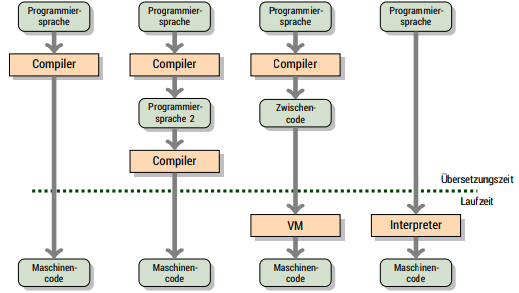

Terms
- CPU = A central processing unit (CPU) is the electronic circuitry within a computer that carries out the instructions of a computer program by performing the basic arithmetic, logical, control and input/output (I/O) operations specified by the instructions. The computer industry has used the term "central processing unit" at least since the early 1960s. Traditionally, the term "CPU" refers to a processor, more specifically to its processing unit and control unit (CU), distinguishing these core elements of a computer from external components such as main memory and I/O circuitry.
- bit patterns / binary code = A binary code represents text, computer processor instructions, or any other data using a two-symbol system. The two-symbol system used is often the binary number system's 0 and 1. The binary code assigns a pattern of binary digits, also known as bits, to each character, instruction, etc.
- core = A core is usually the basic computation unit of the CPU - it can run a single program context. A CPU may have one or more cores to perform tasks at a given time.
- processor design = refers to the way and scope that a core implements processor registers, control unit, bus and memory unit
- processor register = quickly accessible location available to a computer's cpu, common register sizes are 8, 32 or 64-bit register
Basics
An algorithm has to be interpretable to be executed by the computer. A (digital) processor can interpret bit patterns. Bit patterns are also called machine code. A core is a real implementation of an processor design. Processor designs differ in the way and scope that they implement processor registers, control unit, bus and memory unit (also see Von Neumann Architecture).
Different types of processors that implement mostly the same core design my be summarized as a "processor family". A new processor family is formed when a processor design is considerably changed or altered (those are almost always backward compatible).
In machine code the bit pattern \[11111010\] for example is treated by the x86-processor-family as a directive to ignore interrupts.
Compiler and interpreter
Since machine code is not so handy for humans, programming languages have been created that should help with that. Programming languages use different models and abstractions. There is (atleast) one assembly language that represents machine code in an easier to read manner (mnemonics). \(1111 1010\) (resp. \(0xFA\))* for example would be "cli" in assembly language for x86 processors (clear interrrupt flag). Programs are either translated into machine code or are interpreted by another program. This "translation" is done by the compiler while the interpretation is done by the interpreter.
∗ The 0 tells the parser it's dealing with a constant (and not an identifier/reserved word). Something is still needed to specify the number base HEX: the x is an arbitrary choice.
Variants of execution

C
C is a programming language that is compiled into machine code without intermediate language representation (Zwischencode) or VM's.
In this course we'll stick to the C99-standard. Since computers usually support multiple standards, the standard has to be set when compiling. C is "close to the hardware". It is sometimes labeled as "middle language" eventhough it is still a high level programming language. Genereally a low level programming language is a language that provides no or little abstraction from a computer's instruction set architecture. Machine code and assembly language are usually counted as low level. However if you'd for example compare C with Ruby or Php it would be the low level language in that comparison because it offers far less abstractions. That's why some say it is a "middle language".
Usually C programs are really compact - they don't require a lot of overhead and storage. C is widely spread and presumably still the language in most of today's programs are writte.
It is possible to write really efficient C programs (not guaranteed though) and that's why the speed of C programs is often used as a benchmark when it comes to speed and/or efficiency.
In this course the clang compiler or the compiler from the GNU Compiler Collection (gcc) is used. For example like this cc -std=c99 -Wall program.c -o program or (cc -std=c99 -Wall program.c -o program). If the compilation was succesfull, the program can be executed like this ./program and an return value (from the main method) could be retrived with echo $?.
Euclidian Algorithm in C
The Euclidian Algorithm may be used to find the Greates Common Divisor (GCD) of numbers greater than 0. What follows is an implementation of it in C code:
//static in this context means that the function is local and not exported to other modules
static int euclid(int, int); // function declaration
int main(void)
{
return euclid(45, 30);
}
int euclid(int x, int y) // function definition
{
if (x == y) return x;
else if (x > y) return euclid(x-y, y);
else return euclid(x, y-x);
}
Because the function euclid is called in the main method before its defintion, it has to be declared before that so the compiler knows about it. If the function is defined before its first usage, the explicit declaration can be omitted.
Because it is common to use functions from different libraries or modules the declaration serves as an assurance to the compiler that a called function exists and may be called. Else a warning (implicit-function-declaration) would be triggered when compiling, eventhough the compilation might still be successfull.
This is risky because I can call the function without providing arguments for all the parameters e.g euclid(45); and my program would compile just fine. That is until I run it and get a segmentation fault. In that case a declaration of the function interface would have saved me from the runtime error and thrown a compilation error instead.
Input and Output in C
Now we want to parameterize our euclidian algorithm (remember characteristic of an algorithm → should solve a batch of problems) and have an direct output, we need so called library functions.
// euclidian algorithm with IO
extern int printf(const char*, ...); // print format -> write to output
extern int atoi(const char*); // ascii to integer
static int euclid(int, int);
int main(const int c, const char* v[])
{
printf("c is %d\n", c); // number of command line arguments passed
printf("v[0] is %s\n", v[0]); // path the program
const char* arg1 = v[1]; // const because declared as const in the parameter list
const char* arg2 = v[2];
printf("GCD of %s and %s is %d.\n", arg1, arg2, euclid(atoi(arg1), atoi(arg2))); // formatter "%s" expects char*
return 0;
}
int euclid(int x, int y)
{
if (x == y) return x;
else if (x > y) return euclid(x-y, y);
else return euclid(x, y-x);
}
Read the comment and syntax carefully! Furthermore the functions printf and atoi are defined in C's standard library stdlib which is always linked by default (directive to include a library #include<stdlib.h>).
Operators
Depending on the position of an operator (e.g +, -, %, etc.) in regards to where the operator "gets its operands" it can be differentiated between:
- prefix operators (before an operand eg
++i→iis incremented and then used) - postifx operators (after an operand eg
i++→iis used and then incremented) - infix operators (between operands eg
5-2)